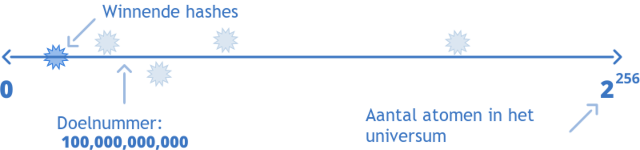

4 Proof-of-work
Het loterij-systeem uit het vorige hoofdstuk, heeft twee grote problemen:
Als we er van uitgaan dat dat we geen enkele centrale partij kunnen vertrouwen, wie verkoopt dan de loten van de loterij en wie kiest de winnende loten?
Hoe zorgen we ervoor dat de winnaar van de loterij de rest niet bedriegt en alleen geldige transacties in het grootboek opneemt?
Als we een systeem willen waar iedereen zonder toestemming lid van kan worden, dan moeten we de eis dat iets betrouwbaar moet zijn uit het systeem halen; het systeem moet trustless zijn.1
We moeten tijdens het bedenken van ons systeem rekening houden met de volgende punten:
Bij gecentraliseerde loterijen zoals de Staatsloterij is één partij verantwoordelijk voor het genereren van alle loten. In ons systeem kunnen we centraal gezag niet vertrouwen, en moet iedereen dus zijn eigen loten kunnen genereren.
We moeten voorkomen dat iemand de loterij volledig in handen krijgt door een enorm aantal loten te genereren. De loten kunnen dus niet gratis zijn. Hoe zorgen we ervoor dat je daadwerkelijk geld moet uitgeven om kaartjes te kopen als er niemand is bij wie je ze kunt kopen? De loten moeten van het universum gekocht worden: je moet elektriciteit verbruiken om ze te genereren.
Het moet voor alle andere deelnemers gemakkelijk zijn om te verifiëren dat je de loterij gewonnen hebt door alleen je lotnummer te controleren. Bij de Staatsloterij bepaalt de trekkingsmachine van de Nederlandse Loterij wat het winnende lot is. In een decentraal systeem kan dat niet. In plaats daarvan laten we iedereen van tevoren overeenstemmen over een getallenreeks. Valt je lotnummer binnen het vooraf bepaalde bereik, dan win je. We gebruiken een cryptografische truc om dit te doen met behulp van een hash-functie.
4.1 Een energie-intensieve asymmetrische puzzel
De elegante oplossing voor alle drie deze problemen heet proof-of-work.2 Dit onderdeel van ons systeem werd al in 1993, lang voor bitcoin, uitgevonden. Dit is waarschijnlijk het moeilijkst te begrijpen onderdeel van onze loterij, dus we zullen hier in de komende hoofdstukken uitgebreid op ingaan.3
Zoals we hierboven (in punt 2) concludeerden, moet het duur zijn om de loten te genereren. Anders kan iedereen zomaar een onbeperkt aantal loten in handen krijgen. Wat is gegarandeerd duur en is niet afkomstig van een centrale autoriteit?
Dit is waar de natuurkundige kant van bitcoin de hoek om komt kijken: de eerste wet van de thermodynamica stelt dat energie niet kan worden gecreëerd of vernietigd. Een gratis lunch bestaat niet als het op energie aankomt. Elektriciteit is altijd duur omdat je het moet kopen van de stroomproducenten, of je eigen energiecentrale moet bouwen. In beide gevallen is het verkrijgen van elektriciteit kostbaar.
Het concept achter proof-of-work is dat je deelneemt aan een willekeurig proces, vergelijkbaar met het rollen van een dobbelsteen. Maar in plaats van de gekende zes zijden, heeft onze dobbelsteen ongeveer evenveel zijden als atomen in het universum. Om deze dobbelsteen te rollen, en dus lotnummers te genereren, moet je computer berekeningen uitvoeren die elektriciteit kosten.
Om de loterij te winnen, moet je een getal vinden dat wiskundig is afgeleid van de transacties die je in het grootboek wilt schrijven, plus het getal dat je op de dobbelsteen hebt gerold. Om dit winnende getal te vinden, moet je misschien wel miljarden, triljoenen of quadriljoenen keren met de dobbelsteen rollen, waarbij je duizenden dollars aan energie verbruikt. Omdat dit proces op basis van willekeur geschied, is het voor iedereen mogelijk om zijn eigen loten te genereren, zonder centrale autoriteit. Hiervoor heb je slechts de lijst met transacties nodig die je naar het grootboek wilt schrijven en een computer die een willekeurig getal genereert.
Ook al heeft het vinden van een winnend getal misschien duizenden dollars aan verbrande energie gekost, toch hoeven andere mensen op het netwerk slechts een paar simpele checks uit te voeren om jouw werk te controleren:
Is het getal dat je hebt opgegeven minder dan het bereik dat van tevoren is afgestemd?
Is het getal inderdaad wiskundig afgeleid van een geldige verzameling van transacties die je naar het grootboek wilt schrijven?
Voldoen de transacties die gepresenteerd worden aan de regels van bitcoin (zijn er geen dubbele uitgaven, worden er geen nieuwe bitcoin gegenereerd buiten het toegestane schema, etc.)?
Het proces van proof-of-work berust op toeval en vereist vele computerhandelingen om een winnend lot te vinden. Het heeft echter maar één handeling nodig om het te verifiëren. Je kunt het zien als een kruiswoordpuzzel of een sudoku. Het kost je misschien uren om op te lossen, maar als je de opgeloste puzzel aan iemand die de regels kent geeft, kan hij in een oogopslag zien of jouw oplossing correct is. Dit maakt het systeem asymmetrisch: het is moeilijk voor de mensen die meespelen, maar heel makkelijk voor de mensen die de uitkomst controleren.
Omdat je een aanzienlijke hoeveelheid energie (en dus geld) verbrandt bij het spelen van deze loterij, wil je dat iedereen jouw winnende lot accepteert zodat jij de prijs krijgt. Je wordt dus gestimuleerd om alleen transacties die voldoen aan de regels toe te voegen aan het grootboek.
Als je bijvoorbeeld geld probeert uit te geven dat al eerder is uitgegeven, dan wordt je winnende lot door iedereen afgewezen en is alle energie die je hebt verbrand om je lot te kopen voor niets geweest. Aan de andere kant, wie zich aan de regels houdt en alleen geldige transacties aan het grootboek toevoegt, wordt beloond met bitcoin om de energierekening te betalen en hopelijk ook nog een beetje winst over te houden.
Het proof-of-work systeem heeft de belangrijke eigenschap dat het kosten heeft die in de echte wereld verankerd zijn. Als je het netwerk aan zou willen vallen door sommige deelnemers te bedreigen, zou je niet alleen hun computers moeten hacken of overnemen, maar ook hun elektriciteitsrekening moeten betalen.
Maar hoe kunnen deelnemers bewijzen dat ze deze energie daadwerkelijk hebben verbrand? Hiervoor hebben we een spoedcursus computerwetenschappen nodig over twee belangrijke concepten: hashing en bits.
4.2 Hashing
De asymmetrische proof-of-work-puzzel van bitcoin omvat het gebruik van een hash-functie.4 Een functie is een wiskundige bewerking waarin je een invoer (x) hebt en je hiervoor een uitvoerwaarde \(f(x)\) krijgt. De functie \(f(x)=2x\) neemt bijvoorbeeld de waarde x en vermenigvuldigt deze met twee. Dus de invoer \(x=2\) geeft ons de uitvoerwaarde \(f(x)=4\).
Een hash-functie is een speciale functie. Een invoer van deze functie kan iedere willekeurige reeks gegevens zijn, en de uitvoer is een getal dat er willekeurig uitziet:
66ef3d9a8035fa324e813fdc368ac175
2e329a1cb663cd1559c747d549983bf8Bovenstaande uitvoer is het resultaat van een specifieke hash-functie met de invoer Hallo Wereld. De specifieke hash-functie die hiervoor gebruikt werd, is sha256. Niet geheel toevallig dezelfde hash-functie die bitcoin ook gebruikt.5
 {#fig-fig4)}
{#fig-fig4)}
De sha256 hash-functie heeft de volgende eigenschappen die nuttig zijn voor ons:
De output is deterministisch. Dat wil zeggen dat je bij dezelfde invoer altijd dezelfde uitvoer krijgt.
De uitvoer is onvoorspelbaar. Indien slechts één letter van de invoer veranderd wordt, dan is de output volledig anders, zonder enige correlatie met de oude invoer.
De uitvoer-hash is snel te berekenen, onafhankelijk van de grootte van de invoer.
Het is praktisch onmogelijk twee verschillende invoerwaardes te vinden die dezelfde uitvoer hebben.
De sha256 functie is een éénrichtingsfunctie. Het is onmogelijk om de invoer te herleiden uit de uitvoer.
De uitvoer is altijd een specifieke grootte (256 bits voor sha256).
4.3 Een korte uitleg over bits
Het getallensysteem waar je bekend mee bent, bestaande uit de getallen 0 tot en met 9 wordt decimaal genoemd omdat het tien cijfers heeft. Computers geven de voorkeur aan een ander getallenstelsel: een systeem gemaakt van enen en nullen, die respectievelijk de aan- of afwezigheid van een elektrisch signaal aangeven. Dit getallensysteem wordt binair genoemd.
In het decimale stelsel gebruik je slechts de cijfers \(0\) tot en met \(9\). Als je slechts één cijfer gebruikt, kun je tien verschillende getallen vertegenwoordigen, 0 tot en met 9. Als je twee cijfers gebruikt, kun je \(10 \times 10 = 100\) verschillende getallen voorstellen: \(00, 01,...\) tot en met \(99\). Voor drie cijfers kun je \(10 \times 10 \times 10 = 1000\) getallen hebben: \(000, 001,...\) tot en met \(999\).
Hopelijk begin je hier een patroon in te zien. Om erachter te komen hoe groot het getal is dat we kunnen voorstellen met N cijfers, vermenigvuldigen we tien, \(N\) keer met zichzelf, oftewel \(10^N\) (\(10\) tot de macht van \(N\)).
Het binaire stelsel werkt op dezelfde manier. Het enige dat verandert is het aantal cijfers die beschikbaar zijn. Terwijl we gewend zijn aan het decimaal stelsel met tien cijfers, kan een binair cijfer of bit slechts twee waarden hebben: nul en één.
Als een bit 2 waarden kan vertegenwoordigen, dan kunnen twee bits 4 waarden vertegenwoordigen: \(00, 01, 10, 11\). Je kunt dit berekenen door \(2 \times 2\) te vermenigvuldigen, aangezien elk cijfer twee waarden kan hebben. Drie bits kunnen \(2 \times 2 \times 2 = 2^3 = 8\) waarden vertegenwoordigen: \(000, 001, 010, 011, 100, 101, 110, 111\).
Een binair getal dat N bits lang is, kan dus \(2^N\) verschillende waarden vertegenwoordigen.
Daarom is het aantal unieke waarden die je kunt vertegenwoordigen met 256 bits, de grootte van de sha256 hashing functie, \(2^{256}\). Dat is een gigantisch, bijna onvoorstelbaar groot aantal. Weergegeven in decimaal, is getal dit 78 cijfers lang. Ter vergelijking is dit ongeveer dezelfde ordegrootte als het geschatte aantal atomen in het bekende universum.
\(2^{256}\) = 115 792 089 237 316 195 423 570 985 008 687 907 853 269 984 665 640 564 039 457 584 007 913 129 639 936
Bovenstaande getal is het aantal mogelijke resultaten van een sha256 hash-functie. Het is dus zo goed als onmogelijk om te voorspellen wat het getal zal zijn dat door deze functie wordt geproduceerd. Het zou hetzelfde zijn als het perfect voorspellen van de uitkomst van 256 achtereenvolgende muntworpen, of het raden van de locatie van één willekeurig uitgekozen atoom, ergens in het universum.
Dit getal is uiteraard te lang om te blijven uitschrijven, dus we houden het vanaf nu gewoon op \(2^{256}\), maar ik hoop dat dit het ongelofelijke aantal mogelijkheden duidelijk heeft gemaakt.
4.4 Laten we een aantal teksten hashen
Hier zijn enkele voorbeeldteksten en hun sha256 hashes. De uitvoer wordt weergegeven in decimale notatie, maar binnenin een computer zou dit de bekende reeks van enen en nullen zijn.
Het punt is om te tonen hoe drastisch de uitvoer verandert op basis van één kleine wijziging in de invoer, en om te laten zien dat je niet kunt voorspellen welke uitvoer geproduceerd wordt door de hash-functie op basis van wat je erin stopt:
“Hello World!”
869913660443924676617831651669733090238
07181648024718778313526389892860994842
“Hello World!!”
849402277206958989554476271088404243643
90283616735576803008868844073193772558Op geen enkele manier kan iemand op basis van deze getallen zien of berekenen wat de invoer is geweest, zelfs geen computer. Als je zelf met sha256 wilt spelen, kun je het uitproberen op https://passwordsgenerator.net/sha256-hash-generator.
4.5 Hashen om de proof-of-work loterij te winnen
Nu zijn we klaar om te praten over het belangrijkste stukje magie. We zeiden dat er \(2^{256}\) totale mogelijke sha256-uitvoerwaarden zijn. Laten we in dit voorbeeld voor het gemak even doen alsof er slechts 1000 verschillende uitkomsten zijn.
Het loterijsysteem werkt als volgt:
Alice kondigt aan dat ze 2 dollar naar Bob wil sturen.
Iedereen die meespeelt, neemt de transactie Alice geeft $2 aan Bob, en voegt hier een willekeurig getal aan toe, wat we een nonce noemen.6 Hierdoor zal de input van hun sha256 hash-functie anders zijn dan de input van die van anderen, wat helpt om een winnend getal te vinden.
Als dat getal kleiner is dan het doelnummer (dit bespreken we verder in het volgende hoofdstuk), winnen ze de loterij.
Als het getal dat ze krijgen groter is dan het doelnummer, dan hashen ze opnieuw, maar voegen dit keer een andere nonce toe: Alice geeft $2 aan Bob nonce=12345, dan Alice geeft $2 aan Bob nonce=92435, dan Alice geeft $2 aan Bob nonce=132849012348092134, enzovoort. Ze doen dit net zolang tot iemand een hash heeft gevonden die kleiner is dan het doelnummer.
Het kan vele, vele pogingen kosten om een hash te vinden die kleiner is dan het doelnummer. We kunnen in feite bepalen hoe vaak iemand de loterij kan winnen door de kans dat ze een winnend getal vinden te manipuleren. Als er 1000 mogelijke hashes zijn, en we stellen het doelnummer in op 100, welk percentage van hashes zit er dan onder de doelnummer?
Dat is natuurlijk vrij basale wiskunde; 100 van de 1000 mogelijkheden, of 100/1000 = 10% van de hashes zullen minder zijn dan het doelnummer. Dus als je een stuk tekst hasht en je hash-functie heeft 1000 verschillende uitkomsten, verwacht je dat 10% van de hashes onder het doelnummer van 100 uitkomt.
En dit is dus precies hoe onze loterij werkt: we spreken een doelnummer af, dan nemen we alle transacties die mensen toe willen voegen aan het grootboek, en hashen ze met een willekeurig getal erbij (de nonce). Zodra iemand een hash vindt die onder het doelnummer valt, deelt hij dit mee aan het hele netwerk:
Hoi iedereen!
Ik heb de transacties Alice stuurt $2 naar Bob en Charlotte stuurt $5 naar Alice genomen.
Ik heb hier de nonce 32895 aan toegevoegd.
De hash hiervan kwam uit op 42, wat minder is dan het afgesproken doelnummer van 100.
Hier is mijn proof-of-work: de transactiegegevens, de nonce die ik heb gebruikt, en de hash die werd geproduceerd op basis van die inputs.
Het heeft mij misschien miljarden hash-pogingen en duizenden dollars aan energie gekost om deze hash te vinden, maar iedereen kan onmiddellijk valideren dat ik dit werk daadwerkelijk heb gedaan; omdat ik zowel de invoergegevens (transacties en nonce) als de verwachte uitvoer (het hash-nummer) aan iedereen heb laten zien, kunnen ze dezelfde hash uitvoeren om in één poging te valideren of ik ze de juiste gegevens heb gegeven.
Hoe verhoudt dit zich tot het verbruiken van energie? We zeiden al eerder dat de set van alle mogelijke hashes eigenlijk een gigantisch getal is, dat ongeveer net zo groot is als het aantal atomen in het universum. We kunnen het doel instellen op een laag genoeg getal zodat slechts een heel klein deel van de hashes geldig is. Dit betekent dat iedereen die een geldige hash wil vinden, een enorme hoeveelheid rekentijd, en dus elektriciteit, zal moeten verbruiken om een hash te vinden die kleiner is dan ons doelnummer.
Hoe lager het doelnummer, hoe meer pogingen het kost om een geldig getal te vinden, en hoe hoger het doelnummer, hoe sneller we een winnende hash kunnen vinden. Als onze kans om het juiste getal te vinden één op een miljoen is, dan bewijzen we door dit getal te vinden dat we ongeveer een miljoen berekeningen hebben uitgevoerd.
